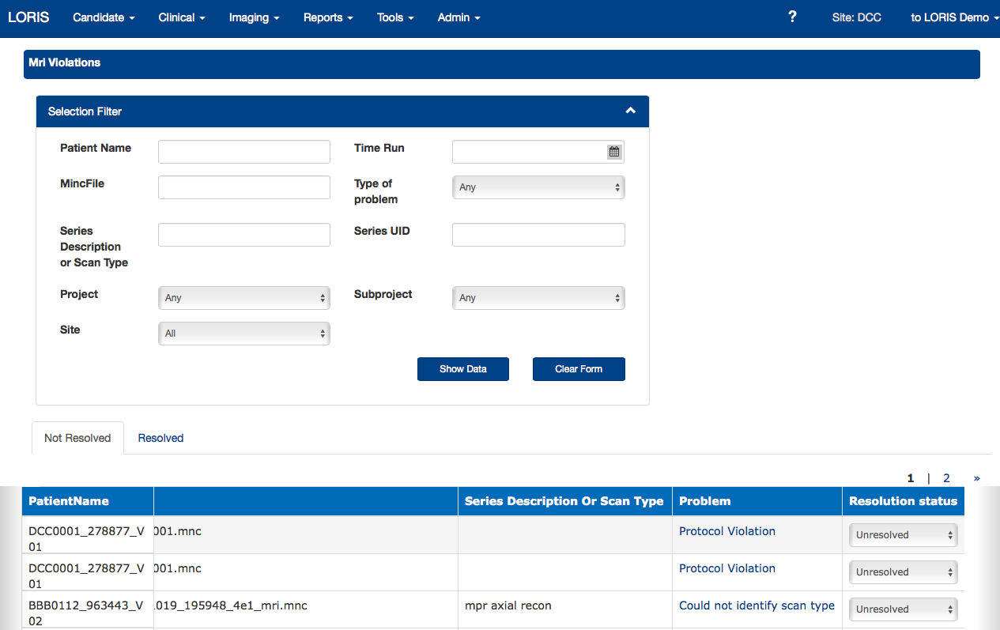
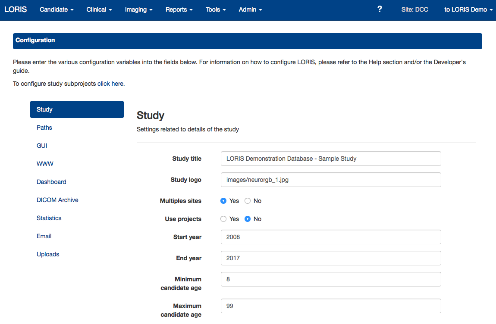
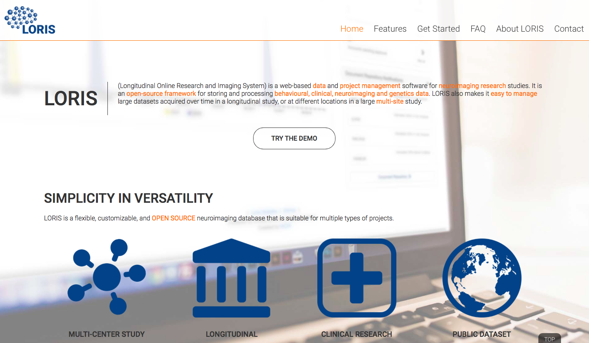

LORIS - Roadmap
The Force Awakens
ACE Developers Meeting
Samir Das - Software Manager
January 15th, 2016
What is LORIS?
|
“LORIS is a modular and extensible web-based data management system that integrates all aspects of a multi-center study: from heterogeneous data acquisition (imaging, clinical, behavior, genetics) to storage, processing and ultimately dissemination.” |

|
History of LORIS

History of LORIS

History of LORIS

History of LORIS
LORIS globally
2015 updates to LORIS
Imaging Uploader - Zia

Interactive Protocol Violations - Zia
Genomics Browser - Christine, Xavier
Improved Instrument Builder - Dave, Jordan
Configuration module - Tara
Dashboard - Tara

Website - Thanks Derek!
Website - Get Derek your pictures, or else I choose!

LORIS Roadmap 2016
Easier Installation
DQT integration and improvements
API for imaging
Imaging Browser Enhancements
Documentation - help sections, wikis, code!
Automated Testing
Genomics
QC modules
Better stats
Reduce rependencies - i.e. Quickforms
Other tasks
Tool improvements (such as import scripts), project customizations, continued GUI improvements, make all modules use pretty urls, remove PEAR dependancies, improve help text, improve queries, upgrade documantation, enhanced javascript, code optimizations, improved security, improved user permissions, upgrades to dashboard, enhanced imaging pipline, project customized modules, LORIS meets DOCKER, update older javascript files, CSV filter exports, improve apache logs, adopt new HTTP standards, and a whole slew of Redmine tickets!
My pitch...
From Acquisition to Analysis
Data acquisition, Transfer, Anonymization, Security and Privacy, Validation, Preprocessing, Storage, Data management, Quality control, Data sharing, Download, Image processing, Statistical analysis ...and Paper writing!
LORIS CBRAIN and more...
The Big Picture
Institutional LORIS
API (imaging, behavioural)
MINC
Visualization efforts
Biobanking
BIC imaging repository
PERFORM Centre and other institutional collaborators
Open Science
Global Data Sharing Initiatives
Public Data Repositories
CBRAIN hooks
BIDS
NIDM
Neurovault
Braincode interoperability
Interoperability with other competitors
Best practices
Infrastructure Needed!

Acknowledgements
Alan Evans, Alex Zijdenbos, Reza Adalat, Penelope Kostopoulos, Louis Collins, Vladimir Fonov, Marc Rousseau, Tarek Sherif, Pierre Rioux, Nic Kassis, Leigh MacIntyre, Claude Lepage, Ilana Leppert, Carolina Makowski, Natasha Beck, Tristan Glatard, Bert Vincent, Lindsay Lewis, Najma Mahani, Elodie Portales-Casamar, Alden Woodward, Sylvain Milot, Jean Francois Malouin & Sylvain Baillet
LORIS Developers: Dario Vins, Jonathan Harlap, Matt Charlet, Andrew Corderey, Sebastian Muehlboeck, David Brownlee, Zia Mohaddes, David MacFarlane, Cecile Madjar, Mia Petkova, Christine Rogers, Rathi Gnanasekaran, Justin Kat, Nicolas Brossard, Tara Campbell, Jordan Stirling, Daniel Kroetz, Ted Strauss, Young-vin Nah, Shipra Agarwal, Pierre-Emmaunel, Martin Weiss, Ayan Sengupta, Olga Tsibulevskaya, Nicolas St. George, Justin Leong, Mathieu Desrosiers, Tom Beaudry and Santiago Paiva